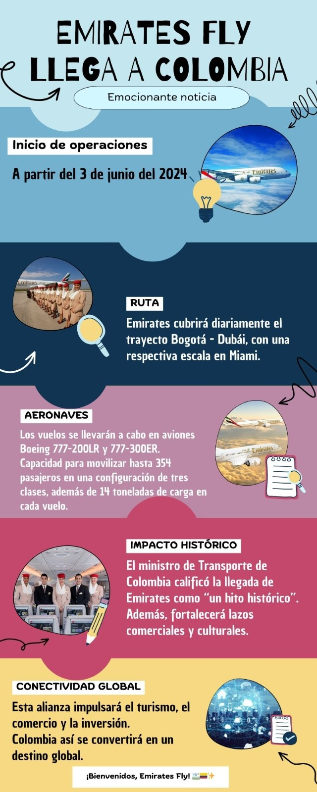

Colombia es un país que ofrece una diversidad impresionante en términos de turismo, gracias a su riqueza cultural, su variedad de paisajes, su biodiversidad y su ubicación estratégica en América del Sur. Desde las playas paradisíacas del Caribe y el Pacífico hasta las majestuosas montañas de los Andes, pasando por sus ciudades llenas de historia y cultura, Colombia ha logrado posicionarse como un destino turístico atractivo. En esta lección, exploraremos en profundidad los diferentes tipos de turismo que ofrece Colombia, sus principales destinos turísticos y los retos y oportunidades del sector.
Turismo en Colombia
Turismo
1. Tipos de Turismo en Colombia
El turismo en Colombia se puede clasificar en varios tipos, dependiendo de las actividades y los intereses de los visitantes:
Turismo Cultural: Enfocado en la historia, el arte y las tradiciones locales, con ciudades como Bogotá, Cartagena y Medellín como epicentros.
Turismo de Naturaleza y Aventura: Colombia es ideal para actividades como senderismo, montañismo, observación de aves y deportes extremos. Regiones como la Sierra Nevada de Santa Marta, el Eje Cafetero y el Amazonas son populares entre los amantes de la naturaleza.
Turismo de Sol y Playa: Las costas caribeñas y pacíficas del país, con destinos como San Andrés, Providencia, Cartagena y Santa Marta, son perfectas para quienes buscan playas y actividades acuáticas.
Turismo Gastronómico: La diversidad de regiones en Colombia ha dado lugar a una rica variedad de gastronomía local, con sabores únicos que se disfrutan en cada región del país.
Turismo de Salud: Colombia también ha ganado popularidad como destino para el turismo médico, con servicios de calidad a precios competitivos, especialmente en procedimientos estéticos y odontológicos.
Turismo de Eventos y Negocios: Las ciudades más grandes como Bogotá, Medellín y Cartagena son escenarios frecuentes de conferencias, convenciones y eventos internacionales.
2. Impacto Económico del Turismo
El turismo es uno de los sectores de mayor crecimiento en Colombia y juega un papel importante en la economía del país. Según el Ministerio de Comercio, Industria y Turismo, el turismo internacional ha crecido significativamente en los últimos años, contribuyendo al PIB y generando empleo en diversas regiones del país.
Generación de Empleo: El sector turístico ha creado miles de empleos directos e indirectos, desde hoteles y restaurantes hasta operadores turísticos y guías locales.
Fomento del Desarrollo Regional: El turismo ha sido clave para el desarrollo de regiones que anteriormente eran menos accesibles, como el Amazonas o la Sierra Nevada de Santa Marta, ayudando a las comunidades locales a mejorar sus condiciones de vida.
Inversión Extranjera: El aumento del turismo ha atraído inversiones extranjeras en infraestructura turística, incluyendo nuevos hoteles, aeropuertos y otros servicios turísticos.

Investiga y discute con tus compañeros sobre como cosas como esta generan un beneficio para el país y que se hizo para legar a ese acuerdo
3. Desafíos del Turismo en Colombia
3.1. Seguridad
Aunque Colombia ha mejorado significativamente en términos de seguridad, la percepción de inseguridad sigue siendo un desafío para atraer más turistas internacionales. Sin embargo, muchas regiones turísticas del país son seguras y están bien preparadas para recibir visitantes.
3.2. Sostenibilidad
El crecimiento del turismo en Colombia debe ir de la mano de la sostenibilidad para evitar el deterioro de los ecosistemas y las áreas naturales. El ecoturismo y el turismo responsable son cada vez más importantes en la planificación turística del país.
3.3. Infraestructura
A pesar de los avances en infraestructura, algunas regiones aún carecen de servicios adecuados para recibir grandes flujos de turistas. La mejora en transporte, accesibilidad y servicios básicos sigue siendo un área clave para el desarrollo del turismo en zonas rurales y más remotas.
3.4. Diversificación de la Oferta
Aunque destinos como Cartagena y Bogotá atraen a la mayoría de los turistas, es crucial diversificar la oferta turística del país para incluir más regiones y tipos de turismo. Esto ayudará a distribuir los beneficios del turismo de manera más equitativa y a evitar la saturación de ciertos destinos.
A partir del siguiente vídeo haz un ensayo y publícalo en tu classwork dando tu opinión y análisis sobre el mismo.
4. Políticas y Estrategias de Fomento al Turismo
El gobierno colombiano ha implementado diversas políticas para fomentar el crecimiento del turismo de manera sostenible y competitiva. Algunas de estas estrategias incluyen:
Promoción Internacional: A través de campañas de promoción como "Colombia, el riesgo es que te quieras quedar", el país ha buscado cambiar la percepción internacional y atraer más visitantes.
Desarrollo del Turismo Rural: Fomentar el turismo en zonas rurales y menos exploradas, promoviendo el ecoturismo y el turismo cultural.
Infraestructura Turística: Inversiones en aeropuertos, carreteras y hoteles para mejorar la experiencia del visitante.
Certificaciones de Calidad: El Ministerio de Turismo ha promovido la certificación de calidad para establecimientos turísticos, garantizando que los servicios ofrecidos sean de alta calidad y sostenibles.
Discute con Prometeo por que el turismo es tan importantes para las personas que viven el día a día de esta manera de subisistír y haz un ensayo y publícalo en tu classwork donde plasmes los duros golpes que sufrío el turismo durante la pandemía del COVID-19.
Obra publicada con Licencia Creative Commons Reconocimiento Compartir igual 4.0